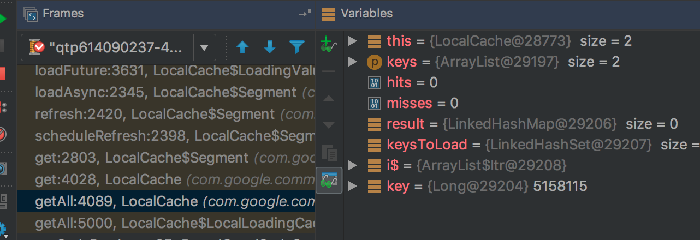

Guava Cache是Google开源的Java工具集库Guava里的一款缓存工具，一直觉得使用起来比较简单，没想到这次居然还踩了一个坑
功能需求抽象出来很简单，就是将数据库的查询sthMapper.findById(Long id)的结果缓存起来。但同时还有批量请求，为了提高效率，肯定要批量查询数据库，sthMapper.findByIds(Collection<Long> ids)
对于的guava cache 处理类
// 定义guava缓存
public SthCache() {
sthCache = CacheBuilder.newBuilder()
.maximumSize(SIZE)
.refreshAfterWrite(3, TimeUnit.SECONDS)
.build(new CacheLoader<Long, List<Long>>() {
@Override
public List<Long> load(final Long id) {
return doLoad(Arrays.asList(id)).get(id);
}
@Override
public Map<Long, List<Long>> loadAll(
final Iterable<? extends Long> ids)
throws Exception {
return doLoad(Lists.newArrayList(ids));
}
});
}
// 实际从数据库中加载数据
private Map<Long, List<Long>> doLoad(final List<Long> ids) {
return sthMapper.findByIds(ids);
}
// 批量获取数据
public Map<Long, List<Long>> getSthById(final List<Long> ids) {
return sthCache.getAll(ids);
}没毛病，getAll(Iterable<? extendsK>)方法用来执行批量查询。默认情况下，对每个不在缓存中的键，getAll方法会单独调用CacheLoader.load来加载缓存项。如果批量的加载比多个单独加载更高效，你可以重载CacheLoader.loadAll来利用这一点。getAll(Iterable)的性能也会相应提升。这边定义了loadAll效率高了。
在debug的时候发现确实走的loadAll,批量查询数据库。但是上线后，线上监控数据却发现这个接口耗时很长，通过分析，发现有很多sthMappper.findByIds()的单个查询。也就是说，并没有调用loadAll，走到批量查询数据库中。
ImmutableMap<K, V> getAll(Iterable<? extends K> keys) throws ExecutionException {
int hits = 0;
int misses = 0;
// 省略一大坨
try {
if (!keysToLoad.isEmpty()) {
try {
// 调用loadAll
Map<K, V> newEntries = loadAll(keysToLoad, defaultLoader);批量查询时，对于没有命中的，确实调用的loadAll来加载数据的。
那问题就不是这边了。在load()方法打了个断点，原因就找到了。

原来是refesh的时候，加载的。refreshAfterWrite 刷新缓存数据时调用的还是load方法。
搜索了下，https://github.com/google/guava/issues/1975 github上这个issue还在。汗！！！
最后我这边解决是用Spring Cache统一了缓存管理。
对于开源库的使用不可只知其然，不知其所以然。
关注公众号【方丈的寺院】，第一时间收到文章的更新，与方丈一起开始技术修行之路